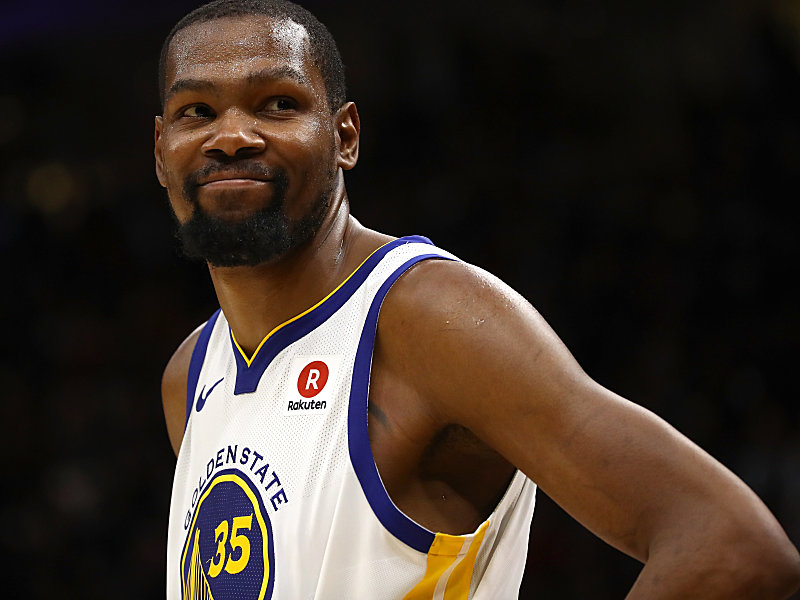

Started Last year with a group of friends. Been playing and enjoying learning how to play ever since. I love the whole concept of the game. From defending playing to atacking and trying to shoot goals so you get a combination of both.
My Hobbies:
Playing basketball
Listening to music
Sleeping
Buying basketball shoes
BASKETBALL
Favourite Player:
Kevin Durant

Introduction:
Born on September 29, 1988 in Suitland, Maryland, just outside of Washington, D .C., Kevin Wayne Durant is a high-profile professional basketball player. After playing college basketball for only one season at the University of Texas, he was chosen second overall in the 2007 NBA draft by the Seattle SuperSonics. Durant went on to become a four-time scoring champion for the organization, which became Oklahoma City Thunder after his Rookie of the Year campaign, and in 2014 he was voted the league's Most Valuable Player. After joining the Golden State Warriors in 2016, Durant led the team to back-to-back NBA championships.
Achievements:
Durant was drafted second, behind Greg Oden, in the NBA draft by the Seattle Supersonics. He played his first year in Seattle and then the team relocated to Oklahoma City and changed its name to the Thunder. Durant won Rookie of the Year and became just the third NBA rookie to average more than 20 points a game. The other two were LeBron James and Carmelo Anthony.
By his second year in the NBA Kevin Durant was considered an elite NBA player. He finished second behind LeBron James in the MVP voting, led the league in scoring, and was named to the All-NBA team. He was the youngest player in NBA history to win the league's scoring title.